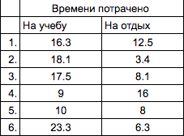

Мной было проведено исследование для того, чтобы понять, как нынешнее поколение в основном использует свое время. В исследовании участвовало 6 подростков, которые на протяжении 3 дней записывали каждое свое действие. Ниже представлена таблица с результатами исследования:
При подсчетах в столбце "На учебу" учитывались такие занятия как школа, тренировки, подготовка домашнего здания, дополнительные кружки и тому подобное. При подсчетах в столбце "На отдых" учитывались: еда, просмотр сериалов,игры в ноутбуке. Не учитывался сон и время на дорогу.
Смотря на эту таблицу можно понять, что у большей части испытуемых уходит больше времени на учебу, чем на отдых. Результаты в графе "На учебу" очень схожи с нормой работы подростков - примерно 6-7 часов в день. В нашем случае выходит около 18-21 часа за 3 дня. Эту норму выполнили только 2 человека из 6.
Но с графой "На отдых" дела обстоят иначе. Норма отдыха составляет примерно 2-3 часа в день, 6-9 часов за 3 дня. В свою очередь, эта норма была выполнена 5 из 6 человек.
Исходя из данных результатов, я могу сказать, что практически все подростки учатся, работают или тренируются меньше, чем положено, тратя время, предназначенное для учебы, на игры, сериалы и отдых. Такие результаты получаются из-за незнания верной организации своего времени. Тайм-менеджмент крайне полезен и поможет поднять вашу самооценку, уравновесить свой график и многое другое.